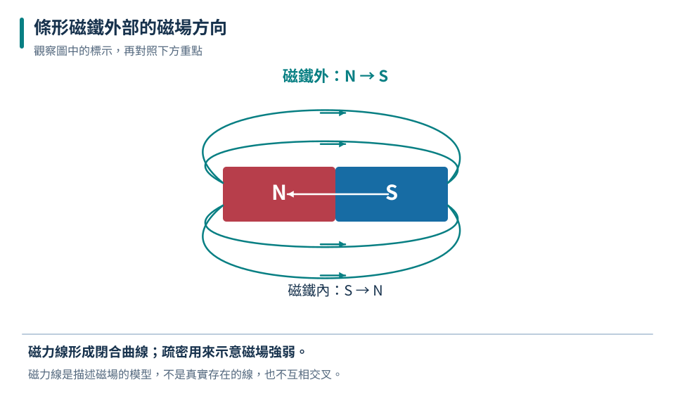
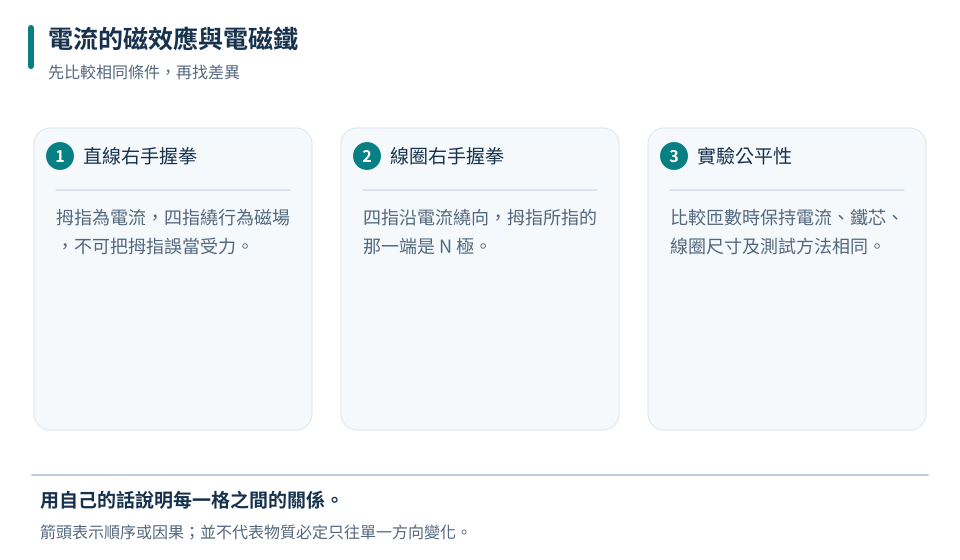
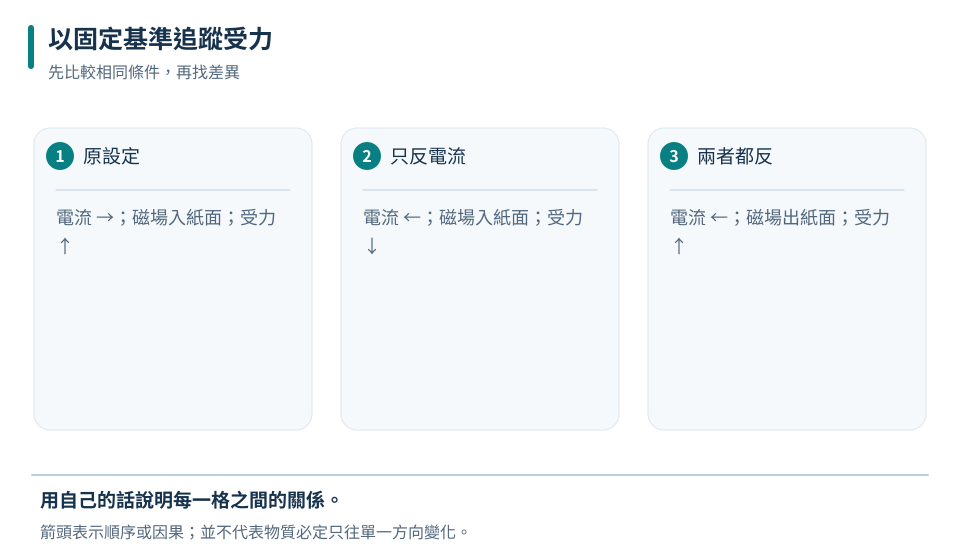
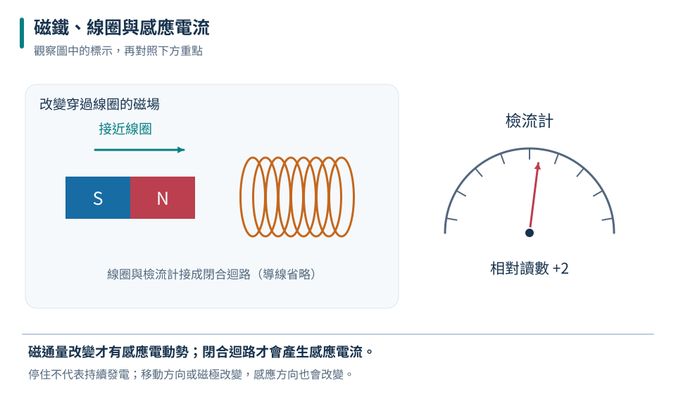

磁極與作用
排斥能支持兩端是同名磁極；吸引也可能由磁化的鐵造成，判斷較不唯一。
九下 · 理化 · 第 2 章
指南針能被磁鐵影響，也能被通電導線影響；馬達讓電流產生運動，發電機則用運動產生電能。這章沿著磁場、電流、受力與感應四條線索練習推理。所有方向題都標示觀察面，並用可重複的實驗比較，避免只背手勢卻弄錯指向。
先備概念：電流方向採傳統正電流方向、閉合電路與電流、能量能轉換但不憑空產生
LEARN & EXPLAIN
磁鐵有 N、S 兩極，同極相斥、異極相吸。把一般磁鐵切成兩段，每段仍有 N、S 兩極，不會只剩單一磁極。鐵等材料能被磁鐵吸引，但不是所有金屬都容易被磁鐵吸引；而吸引也不必然表示被吸物本來就是永久磁鐵。
磁場方向定義為放在該處的小磁針 N 極所指的方向。磁力線是表示磁場的模型：在磁鐵外部由 N 指向 S，在內部由 S 回到 N，形成連續閉合線；圖上較密表示場較強。磁力線不是有形細線，鐵粉排列能顯示圖樣但不能單獨決定箭頭方向。
排斥能支持兩端是同名磁極；吸引也可能由磁化的鐵造成，判斷較不唯一。
在遠離其他磁源時，磁針大致沿地磁方向；附近通電器材會干擾。
指南針 N 極大致朝地理北方，說明地理北方附近的地磁作用相當於磁鐵 S 極一側。

上下兩條外部磁力線皆從左側 N 流向右側 S；下方灰色箭頭只用來標示內部回程方向。
僅憑吸引無法確定甲是永久磁鐵的 S 極。
所有金屬都能被磁鐵強烈吸引是錯誤的；銅、鋁等常見金屬不像鐵那樣被一般磁鐵明顯吸住。
LEARN & EXPLAIN
通電導線周圍有磁場。對長直導線，用右手拇指指向傳統電流方向，彎曲四指的方向就是繞線磁場的方向。符號「⊙」表示指向觀察者、出紙面；「⊗」表示遠離觀察者、入紙面。先確認電流和觀察面，再套方向規則，才能避免把紙前紙後倒過來。
導線繞成線圈後，各圈的磁場可疊加。從線圈某一端看，電流若為逆時針，該端相當於 N 極；順時針則相當於 S 極。在其他條件相近且未達材料限制時，增加電流、增加線圈匝數或加入適當鐵芯，可增強電磁鐵。比較匝數效果要控制電流，因為加長導線也可能改變電阻。
拇指為電流，四指繞行為磁場，不可把拇指誤當受力。
四指沿電流繞向，拇指所指的那一端是 N 極。
比較匝數時保持電流、鐵芯、線圈尺寸及測試方法相同。
| 組別 | 匝數 | 電流 A | 吸起同款迴紋針數 |
|---|---|---|---|
| 甲 | 50 | 0.2 | 6 |
| 乙 | 100 | 0.2 | 11 |
| 丙 | 100 | 0.4 | 18 |

甲乙可比較匝數；乙丙可比較電流。針數只是此裝置的測量指標，不保證嚴格正比。
磁針 N 極向紙面上方。
電流周圍有磁場，不代表磁場沿電線直直往前；長直線周圍的磁場繞線成圓。
LEARN & EXPLAIN
通電導線置於外加磁場中，若電流方向不與磁場平行，可能受到側向力。受力方向同時垂直於電流和磁場。這裡使用固定方向基準：電流向右、磁場入紙面時，導線受力向上。只反轉電流或只反轉磁場，受力反向；兩者同時反轉，受力方向保持原來方向。
線圈放在磁場裡，兩側電流方向相反，受力可形成轉動效果。簡單直流馬達用換向器配合電刷，在適當時刻改變線圈內電流方向，讓轉動效果維持同一轉向。電動機把電能轉為機械能，同時有部分能量轉成熱與聲。若只知道它在轉，不能推論效率為百分之百。
理想直線電流與均勻磁場平行時，這段線的磁力為零。
改電流或改磁場各造成一次方向反轉；兩個同時改則抵消。
決定導線周圍磁場和決定導線受力是兩個問題，應先辨識正在求什麼。

這是電流受外加磁場作用；不是導線自己周圍的磁場方向圖。
對題設的永久磁鐵直流馬達，預期轉向反轉。
電流不論朝哪個方向都一定受磁力並不正確；與均勻外加磁場平行的理想直導線是重要反例。
LEARN & EXPLAIN
磁鐵靠近或遠離線圈時，穿過線圈的磁場狀態改變，能在線圈產生感應電壓；接成閉合電路時才有持續可量到的感應電流。把磁鐵固定在線圈內，待變化停止後，即使磁場很強，也不會一直感應出電流。移動線圈、改變相鄰電磁鐵的電流或轉動線圈，都可能讓穿過線圈的磁場改變。
在同一裝置中，磁鐵移動更快通常使感應更強；改變移動方向或磁極方向，可使感應電流反向。感應的磁效應會反抗原本磁場狀態的改變，因此發電需要外界做功。發電機將機械能轉成電能；風、水或蒸汽推動機械只是不同的能量來源，磁鐵不是永遠免費提供電能的燃料。
有磁場不是充分條件，必須使穿過迴路的磁場狀態改變。
開路仍可出現感應電壓，但沒有完整路徑就沒有閉路電流。
N 極靠近線圈時，線圈近端可形成 N 極以反抗靠近；移開則反抗離開。

輸出電能來自外界輸入的能量；不能只靠靜止磁鐵無限供電。
偏一側 → 回零 → 偏另一側；實際左右由接線與觀察方向決定。
「磁鐵越強就永遠有電流」不成立：靜止且不變的磁場，不會在靜止線圈中持續產生感應電流。
TRY, OBSERVE, EXPLAIN
REVIEW
排斥能支持兩端是同名磁極；吸引也可能由磁化的鐵造成，判斷較不唯一。
回到這一節複習拇指為電流，四指繞行為磁場，不可把拇指誤當受力。
回到這一節複習理想直線電流與均勻磁場平行時，這段線的磁力為零。
回到這一節複習有磁場不是充分條件，必須使穿過迴路的磁場狀態改變。
回到這一節複習CHAPTER TEST
先獨立作答，再看解析。中難與難為編者估計，尚未經學生實測校準。